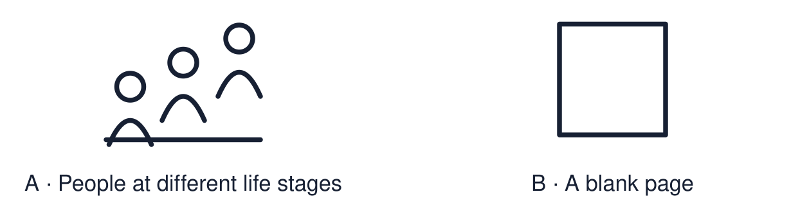

Arrival choices
Previous lesson reminder:

Start with 1 and 2. Try 3 and 4 when ready. Reading and exact scribing are available.
1 Give one reason pilgrimage may matter to a believer.
Support: Use the reminder strip or talk it through with an adult.
2 Which meaning fits rite of passage?
Support: Choose: A ceremony that marks a new stage of life OR A formal event with set words and actions.
3 Define “rite of passage”.
Support: Use the model evidence anchor word or read one relevant card together.
4 Are rites of passage only religious?
Support: Give a reason when ready.
Stretch: use a precise example or explain which detail supports your answer.
Evidence cards
Read, point or listen. Keep the source label with any detail you use.
A Bar and Bat Mitzvah
Bar or Bat Mitzvah marks becoming responsible for the commandments in Jewish life. Common ages are 13 for boys and 12 or 13 for girls, depending on the community. A synagogue celebration may include reading Torah; practices vary.
Source: Authored RE summary
Limit: Jewish communities mark this in different ways.
B Confirmation
Confirmation is an expression of Christian commitment in churches that practise it. In the Church of England it includes affirming baptismal promises and a bishop laying on hands. Other Christian traditions differ.
Source: Authored RE summary
Limit: Christian churches differ. Some do not practise confirmation.
C A Humanist naming ceremony
Some non-religious families hold a naming ceremony to welcome a child. Family and friends make promises of support. There is no religious content.
Source: Authored RE summary
Limit: Many non-religious families hold no ceremony.
D Three questions
What happens? What does it mean? How does it show belonging?
Source: Authored classroom resource
Limit: Three questions are a starting point.
Shared investigation
1. Sort each detail: Bar/Bat Mitzvah, Confirmation or both.
2. Answer the three questions for one ceremony.
Work with a partner or adult, or use your own table. One person suggests; the other checks the evidence. Swap after one turn. Passing is allowed.
Move or match the cards
| Cards to use |
|---|
| The community witnesses a young person’s commitment |
| Confirming promises made at baptism |
| Reading from the Torah |
Possible labels: Bar/Bat Mitzvah / Both / Confirmation
Support: Use the glossary and one chunk of evidence. Plan the claim and supporting detail before explaining.
Further challenge: Explain why communities mark life stages publicly and not in private.
Supported independent task
Complete this route only. Describe a rite of passage and explain how it can connect a person to a community.
1. Choose one ceremony from the case studies.
2. Match: what happens → what it means.
3. Say how it shows belonging.
Support: Use the glossary and one chunk of evidence. Plan the claim and supporting detail before explaining. Complete the organiser one space at a time. At a ___, ___. This means ___. It shows belonging because ___.
An adult may read or scribe your exact response. They should not choose the answer.
Standard independent task
Complete this route only. Describe a rite of passage and explain how it can connect a person to a community.
1. Choose one rite of passage.
2. Answer: what happens? What does it mean?
3. Explain how it shows belonging.
Support: At a ___, ___. This means ___. It shows belonging because ___.
Check the required evidence and revise one detail.
Stretch independent task
Complete this route only. Describe a rite of passage and explain how it can connect a person to a community.
1. Answer the three questions for one ceremony.
2. Compare it with a second ceremony.
3. Explain why a public ceremony strengthens commitment.
Support: Choose the evidence independently. Use the frame only if it helps.
Explain why communities mark life stages publicly and not in private.
Exit ticket
Choose a response mode. You may give your answers privately to an adult.
Define “rite of passage”.
Are rites of passage only religious?
Support: At a ___, ___. This means ___. It shows belonging because ___.
Further challenge: Explain why communities mark life stages publicly and not in private.